Drink water, read, and breathe,
with a little help.
Sathi is a free menu bar app for your Mac. Three friendly buddies remind you to drink water, read, and meditate. They stay gentle, and get firmer only if you keep saying "later".
- 3 buddies, 1 menu bar icon
- 0 accounts, ads, or tracking
- 0 bytes leave your Mac
- <1% CPU when idle
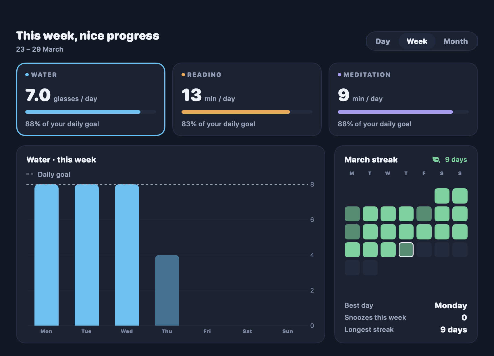

Every reminder
See each reminder the way it shows on your Mac
These are real Sathi views, rendered from the app code with sample data. Pick a buddy and a moment. Things to notice:
- Nudgy has no close button and wiggles after 1 snooze
- The Strict lock always has an Emergency skip
- Boi's popup sits in the corner and never takes focus
- The thank-you button says when Fota comes back
- Shanti counts each breath round for you

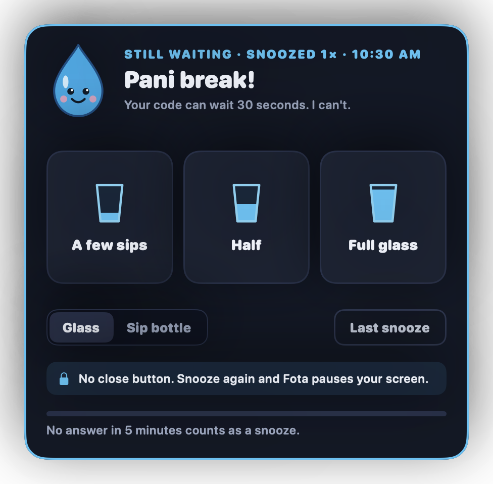
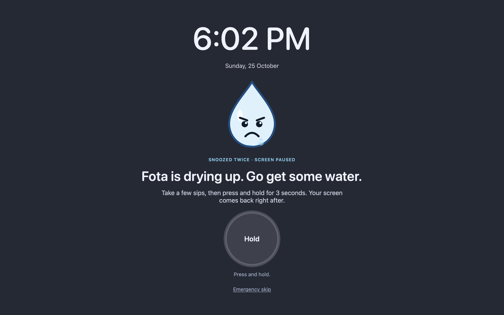
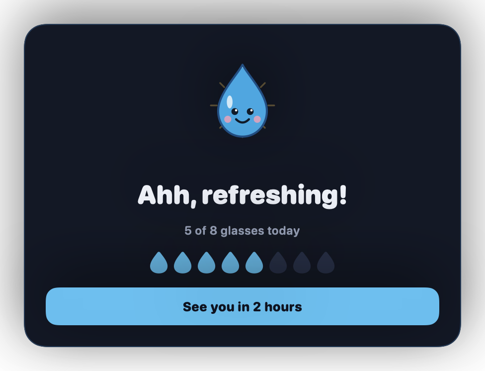
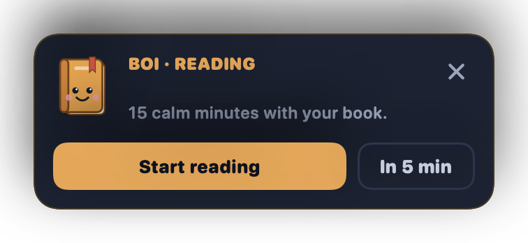
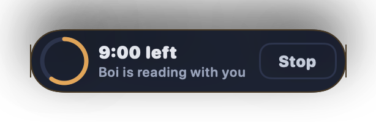
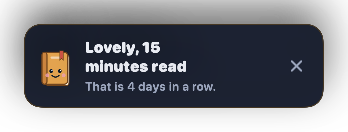
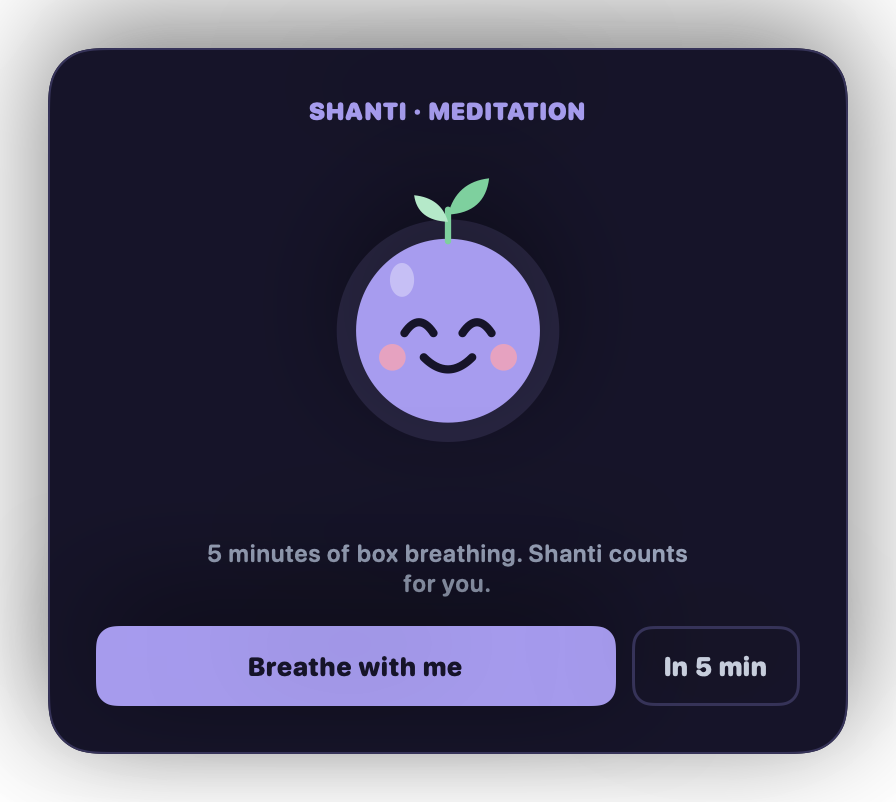
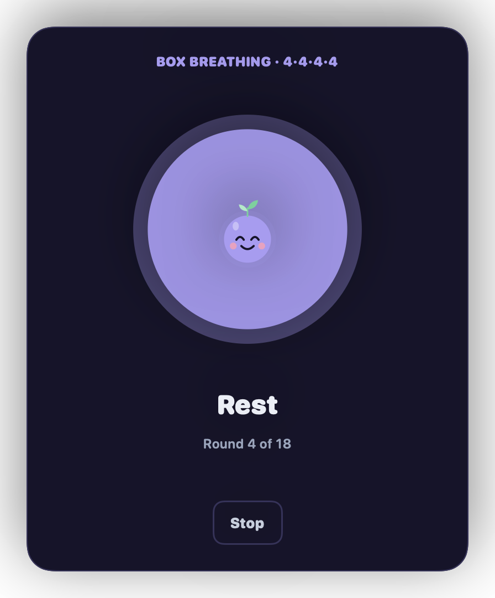
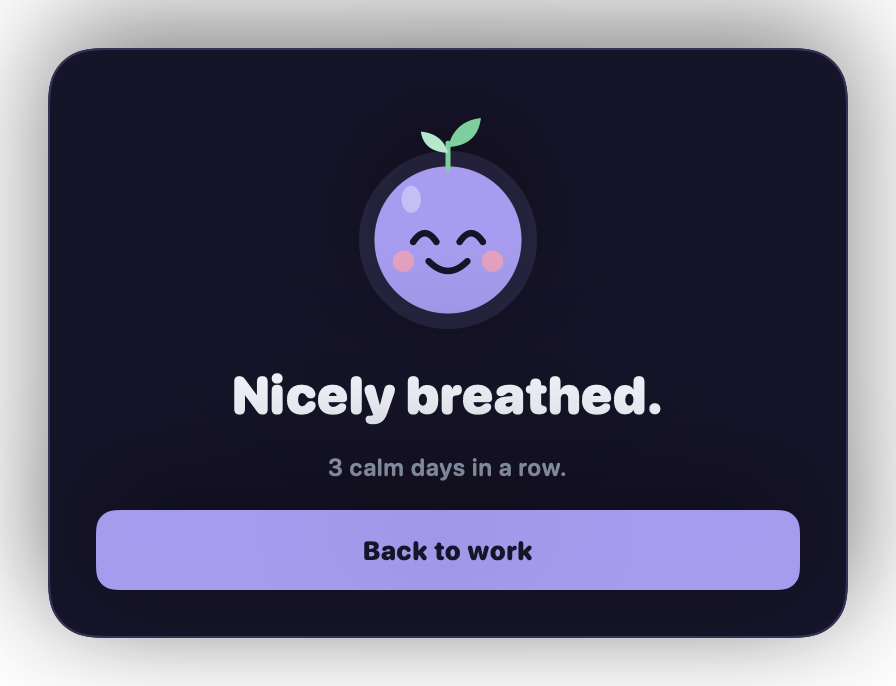
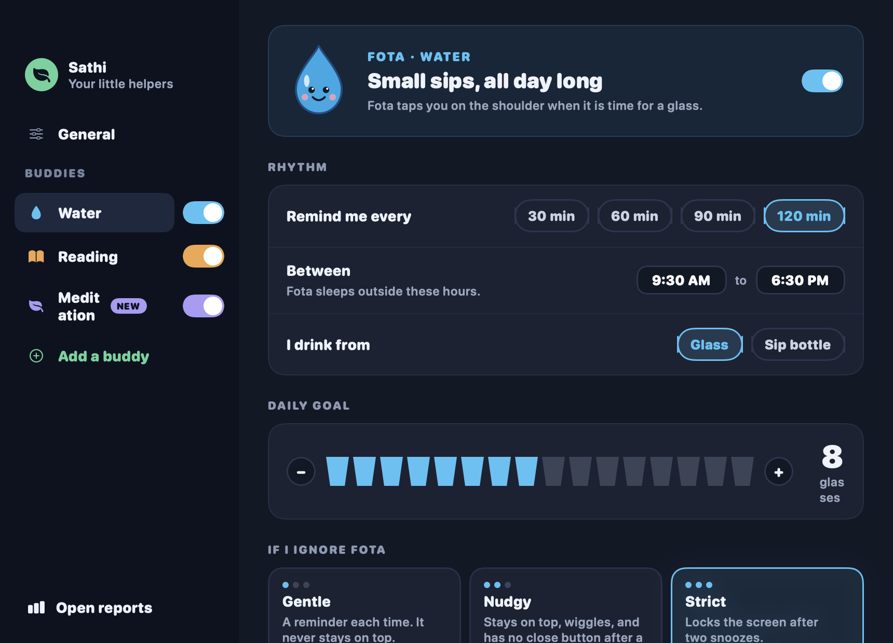
On a phone the desktop is small. Tap an image to open it full size.
Features
Kind reminders that respect your focus
Fota, your water buddy
A reminder every 2 hours between 9:30 and 18:30. Answer in one click and get back to work.
- Log a few sips, half a glass, or a full glass
- Use a sip bottle and drag its water line instead
- Daily goal of 8 glasses, with a streak
- Pick Gentle, Nudgy, or Strict
Boi, your reading buddy
A calm popup in the top-right corner at 22:00. It never steals focus from what you do.
- Start a 15-minute timer in one click
- The timer runs in a small pill in the same corner
- Pick the weekdays you want to read
- Skips the day when you already met your goal
Shanti, your meditation buddy
A guided breathing session at the time slots you pick. Off by default. Turn it on in Settings.
- Box, relax, or even breathing patterns
- Morning, afternoon, and evening slots
- Pick the session length and an optional chime
- Never locks the screen
Reports and streaks
See your week at a glance, and keep the streak calendar green.
- Each habit by day, week, or month
- Average per day and percent of your goal
- A streak calendar, your best day, and your longest streak
Settings on one page per buddy
Turn a buddy on or off with one switch, and tune it to your day.
- Interval, active hours, container, and goal
- Reading weekdays, meditation time slots
- Your name, snooze length, sound, and open at login
Gentle to strict
Each buddy is as firm as you want
If you ignore a reminder, it escalates one step at a time. Pick the level for each buddy in Settings.
| Level | What happens | Buddies |
|---|---|---|
| Gentle | A reminder each time. It never stays on top. | Water, reading, meditation |
| Nudgy | After 1 snooze: stays on top, wiggles, and has no close button. | Water, reading, meditation |
| Strict | After 1 snooze: Nudgy. After 2 snoozes: a full-screen lock. Hold 3 seconds to unlock. Emergency skip is always there. | Water only |
| Pause | Stop all reminders for 30 minutes, 1 hour, or the rest of the day from the menu bar. | All |
Your habits stay on your Mac
Sathi makes no network requests. No account, no analytics, no cloud. Your data is plain JSON in ~/Library/Application Support/Sathi/.
prefs.json | Your settings |
state.json | Live state, such as the bottle level |
history/YYYY-MM.json | Each done, snooze, and skip, kept forever |
Light on your Mac
Sathi checks its budget on every release.
| CPU when idle | under 1% |
| Memory | under 40 MB |
| Wakeups | under 10 per minute |
| Timers | no repeating 1-second timers |
Install
Ready in about a minute
No account and no setup. You need macOS 13 Ventura or newer.
-
Open the DMG
Drag Sathi to the Applications folder.
-
Open Sathi the first time
Sathi is not notarized by Apple, so macOS asks first. Open Sathi once, then go to System Settings → Privacy & Security and click Open Anyway. On macOS 13 and 14 you can also right-click Sathi and choose Open.
-
Find the drop in your menu bar
Click it, then the gear icon. On the General tab, turn on Open Sathi when I log in.
-
Try a reminder now
In Settings, pick a buddy and click Show a reminder now.
FAQ
Questions
Is Sathi free?
Yes. Sathi is free and open source under the MIT license. There is no account, no subscription, and no ads.
Does Sathi send my data anywhere?
No. Sathi makes no network requests. Your settings and history stay in ~/Library/Application Support/Sathi/ on your Mac.
Which Macs can run Sathi?
Any Mac with macOS 13 Ventura or newer, on Apple silicon or Intel.
Why does macOS say it cannot check Sathi for malware?
Sathi is not notarized by Apple. Open System Settings, then Privacy & Security, and click Open Anyway next to Sathi. You do this once.
Can Sathi lock my screen?
Only for water, and only if you pick Strict. After 2 snoozes a full-screen lock asks you to drink. You unlock it by holding a button for 3 seconds, and there is always an emergency skip. Reading and meditation never lock the screen.
Does Sathi slow down my Mac?
No. Sathi uses less than 1% CPU when idle, under 40 MB of memory, and has no repeating 1-second timers.